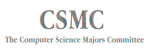

The csmc plans cs parties, makes t-shirts, sponsors cs lunches, and
holds discussions about what is going on in the cs department. We
meet at 8:00pm on Thursdays in the King lounge (bi-weekly so far). Join us if you have
something you'd like us to discuss or if you'd just like to get
involved. We're here to address any concerns you may have with the
department. If you'd like us to discuss something, but you can't make
it to a meeting, please feel free to send csmc email, or talk with one of the regular members. (Hopefully, we will soon have a list here.)
This page contains all sorts of information about deciding whether to
apply to grad school, applying to graduate school, visiting schools,
and what to do once you've gotten in. :)
CS News
We've got a buttload of new Pentium Pro machines in the lab now, named after
muppets, I believe (reference: the msgs B5 war.)